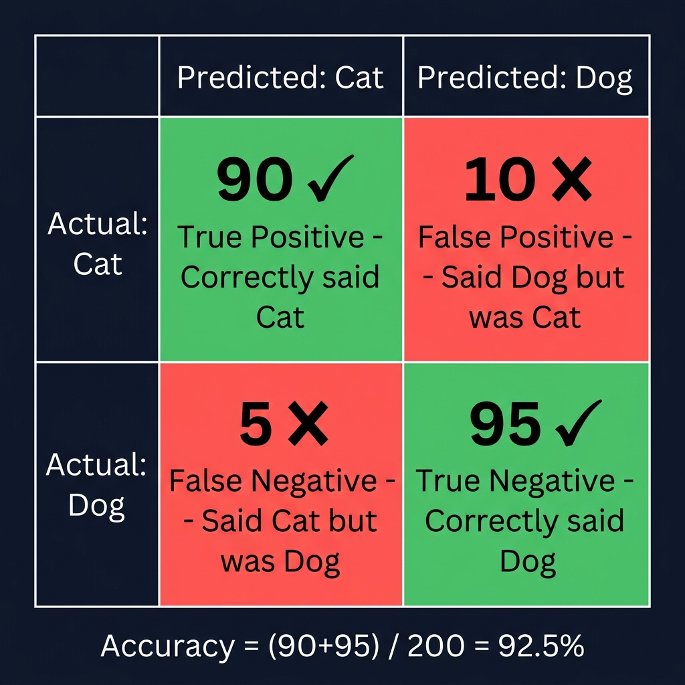

التقييم والمقاييس Evaluation & Performance Metrics
بعد التدريب Training، كيف نعرف أن النموذج Model جيد فعلاً؟ هنا تأتي مقاييس الأداء Performance Metrics.
١. لماذا نقيّم النموذج؟ Why Evaluate?
التقييم Evaluation هو امتحان للنموذج بعد التدريب. نختبره على بيانات لم يرَها Unseen Data لنعرف: هل تعلّم فعلاً Generalized أم حفظ فقط Memorized؟
مثال: طالب طب تدرب على 100 حالة. نعطيه 20 حالة جديدة لم يرَها — إذا شخّصها صح = تعلّم فعلاً. إذا أخطأ كثيراً = حفظ الحالات القديمة بدون فهم. التقييم يكشف الحقيقة!
٢. درجة الثقة Confidence Score
عندما يكتشف النموذج شيئاً، يعطيه نسبة ثقة Confidence Percentage من 0% إلى 100%. كلما ارتفع الرقم، كلما كان أكثر تأكداً More Certain من اكتشافه.
النموذج واثق جداً — غالباً اكتشاف صحيح
ثقة متوسطة — قد يكون صحيحاً أو خطأ
ثقة منخفضة — غالباً خطأ، يُستبعد
عادةً نضع حد أدنى Confidence Threshold مثل 50%. أي اكتشاف تحت هذا الحد يُرفض تلقائياً. يمكنك تعديل هذا الحد حسب مشروعك.
٣. الدقة والاستدعاء Precision & Recall
🎯 الدقة Precision
من كل ما قاله النموذج أنه إيجابي Predicted Positive، كم نسبة اللي فعلاً إيجابي؟
مثال: نظام كشف سبام أوقف 100 رسالة. عند الفحص: 85 منها فعلاً سبام و15 كانت رسائل عادية (أخطأ فيها). Precision = 85/100 = 85%
المعنى: "هل أثق في اكتشافات النموذج؟"
📡 الاستدعاء Recall (Sensitivity)
من كل الحالات الإيجابية الحقيقية Actual Positive، كم نسبة اللي اكتشفها النموذج؟
مثال: البريد فيه 100 رسالة سبام فعلية. النظام اكتشف 80 منها وفاته 20. Recall = 80/100 = 80%
المعنى: "هل يفوّت النموذج حالات مهمة؟"
٤. متوسط الدقة ونسبة التقاطع mAP & IoU
🏆 mAP — mean Average Precision
المقياس الشامل Overall Metric الذي يجمع Precision و Recall لجميع الفئات Classes. كلما ارتفع = النموذج أفضل.
الدقة عندما يكون تطابق المربعات IoU ≥ 50%. المقياس الأكثر استخداماً.
المتوسط عند عتبات Thresholds من 50% إلى 95%. أصعب وأدق.
📐 نسبة التقاطع IoU — Intersection over Union
يقيس مدى تطابق المربع Bounding Box الذي رسمه النموذج مع المربع الحقيقي Ground Truth Box.
تخيل مربعين متداخلين: IoU = (المساحة المشتركة Intersection) ÷ (المساحة الكلية Union). إذا IoU = 0.8 يعني تطابق 80% — ممتاز! إذا IoU = 0.2 يعني تطابق 20% — سيء.
٥. مصفوفة التشويش Confusion Matrix
جدول يوضح أين أصاب النموذج وأين أخطأ Correct vs Incorrect Predictions لكل فئة.

📊 مخطط توضيحي — كيف تُقرأ مصفوفة التشويش Confusion Matrix: TP, TN, FP, FN
مثال: نظام تصنيف بريد (سبام / عادي) Spam Classification Example
| توقع النموذج Predicted | |||
|---|---|---|---|
| سبام Spam | عادي Not Spam | ||
| الحقيقة Actual | سبام | 80 ✅ TP — اكتشفه صح |
20 ❌ FN — فاته! |
| عادي | 5 ❌ FP — إنذار كاذب |
95 ✅ TN — تركه صح |
|
شرح المصطلحات الأربعة TP, TN, FP, FN Explained:
النموذج قال "سبام" ← وفعلاً سبام ✅. إصابة!
النموذج قال "عادي" ← وفعلاً عادي ✅. إصابة!
النموذج قال "سبام" ← لكنها رسالة عادية! ❌
النموذج قال "عادي" ← لكنها سبام فعلاً! ❌
٦. دالة الخسارة Loss Function
Loss هو رقم يقيس مقدار خطأ النموذج Error Measurement. الهدف من التدريب: تقليل هذا الرقم لأدنى قيمة ممكنة Minimize Loss.
الخطأ على بيانات التدريب — يجب أن ينزل ↓ مع كل Epoch.
الخطأ على بيانات التحقق — إذا بدأ يرتفع ↑ = Overfitting!
أفضل نموذج best.pt / best model checkpoint هو الذي حقق أقل Validation Loss أثناء التدريب. هذا هو الملف الذي يُستخدم في التطبيق النهائي Production.